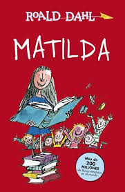

Worldreading


Matilda es una lectora empedernida con solo cinco años. Sensible e inteligente, todos la admiran menos sus
mediocres padres, que la consideran una inútil. Además tiene poderes extraños y maravillosos... Un día, Matilda
decide desquitarse y empieza a emplearlos contra la abominable y cruel señorita Trunchbull .
Nº de páginas:240
Editorial:ALFAGUARA
Idioma:CASTELLANO
Año de edición:2004